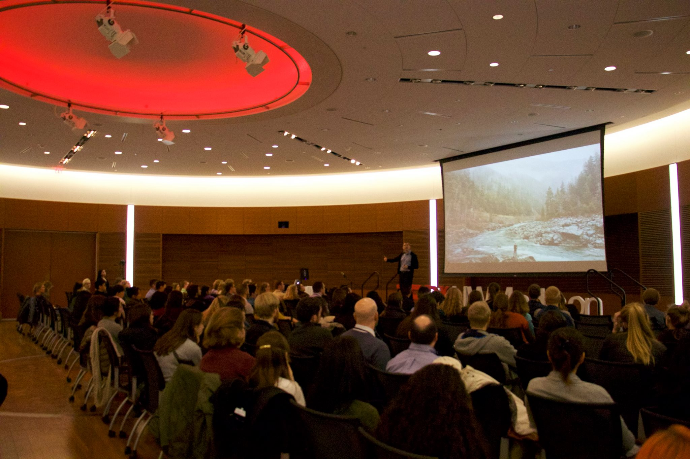
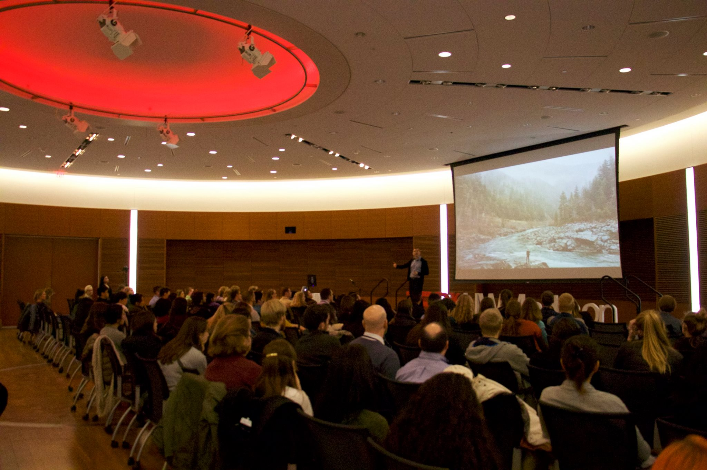
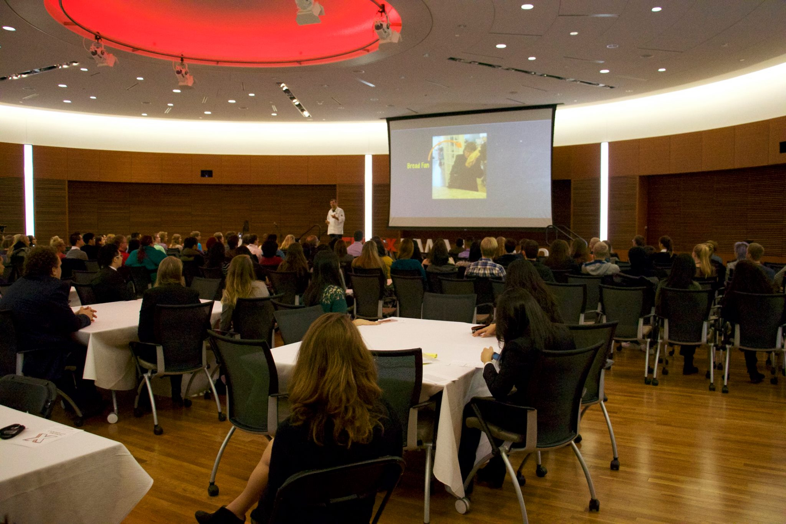
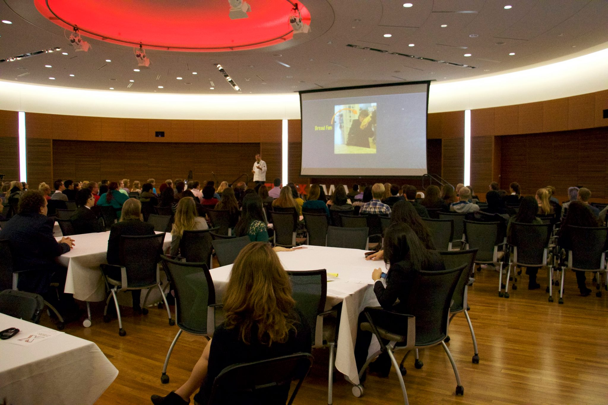

Dr. Christine B. Whelan is a professor, author and nationally recognized through leader on the quest for happiness and well-being. Dr. Whelan is on a quest to translate and instrumentalize cutting-edge academic research to positively impact the lives of as many people as possible. In her research and teaching she lives out Seneca’s hope that it is “not for school but for life we learn.” Dr. Whelan is currently working on a book about what ancient practices for wellness can tell us about how to thrive in the modern world. She is the author of four previous books, including The Big Picture: A Guide to Finding Your Purpose in Life (Templeton Press, 2016). As a clinical professor in the School of Human Ecology at the University of Wisconsin – Madison, Dr. Whelan teaches popular classes on the intersection of money and happiness. She’s the director of MORE: Money, Relationships and Equality. Dr. Whelan earned a masters and doctorate from the University of Oxford, and an undergraduate degree from Princeton University. She has held teaching positions at the University of Pittsburgh, the University of Iowa and Princeton University, and her work has been published in The Wall Street Journal, The Washington Post and The New York Times, among other national outlets. She has appeared live on television programs and radio programs across the nation.
AJ Carr is the 14 year old owner of Building Bosses. AJ created "Building Bosses" to help the youth to explore & cultivate their talents, promote leadership & positivity, build character through self-esteem by teaching self-worth, & encourage our youth to become productive members of society. Building Bosses is a program that pairs young people with successful, local business owners who provide guidance and ongoing mentorship. AJ works very hard to inspire positive change in the community, and he has had many accomplishments at such a young age. He is a public speaker, as well as a professional SAG actor. He currently has a recurring role in the new Showtime series shooting in Chicago produced by Common called "The Chi". He was recently featured on the front page of the CapTimes. He has even received 3 letters from The White House. A documentary film has been created about AJ titled "AJ Carr", and it will be shown in schools in multiple states. AJ strives to make a difference in as many young lives as possible, and inspire positive change.
Thomas is a junior UW Madison, currently pursuing a triple major in Economics, Finance and Risk Management. This coming summer, he will be working for Rothschild’s New York City Office as a summer analyst in their Mergers and Acquisition division. On campus, he is involved in a number of different things including the Chairmen of the Federal Reserve Challenge, the Head of Business Operations for a student org that he founded with some friends, and a competitor on the UW Taekwondo team, where he hold a 4th degree black belt. During his free time, Thomas is passionate about cancer-focused volunteer work, which holds a very special place in his heart. In particular, he is a former Make-A-Wish Child and now him and sister are Wish Granters for the organization. Thomas has always been a huge TED fan, and as former member of TEDxUW-Madison, is incredibly excited to be able to share his story and message with all of you.
Since June 2007 Troy Reeves has led the oral history program at the UW-Madison Archives. From 1999-2006 he directed the Idaho Oral History Center in Boise. In both of those positions, Reeves has overseen the key components of managing an oral history program—collecting and curating oral history recordings, as well as communicating and collaborating with interested individuals about the art and science of oral history. Along with these program leadership tasks, he has managed over twenty oral history projects in Wisconsin and Idaho on myriad topics, including cultural, political, and environmental history. He also has been published in historical journals, including the Western Historical Quarterly, the Public Historian, and the Oral History Review. Along with these projects and publications, Reeves has held leadership roles in the national Oral History Association, including serving as the managing editor of the Oral History Review from January 2012-December 2017.
Ben believes that gardeners, through their gardens, can save the world. He is passionate for connecting people to plants, and one another, through public gardens. Ben is most interested in the potential of urban landscapes to provide meaningful, authentic, and transformative experiences through participation and co-creation of green space. Ben is the Director of the Allen Centennial Garden at the University of Wisconsin-Madison. A life-long gardener, Ben was born and raised in South Bend, Indiana. Prior to this role, Ben worked at Fernwood Botanical Garden in southwest Michigan and the Lurie Garden in Chicago's Millennium Park.
Eric Wilcots is a Professor of Astronomy and Deputy Dean of the College of Letters and Science. He has long been interested in understanding the history of galaxies like our own Milky Way and the role the environment plays in determining that history. A native of Philadelphia, Professor Wilcots earned his bachelor's degree from Princeton University and Ph.D at the University of Washington. He spent three years as a Jansky Fellow at the National Radio Astronomy Observatory in Socorro, NM (site of the movie Contact) before coming to UW-Madison in 1995.
Dr. Goldberg is Professor of Epidemiology at the University of Wisconsin Madison School of Veterinary Medicine, John D. MacArthur Research Chair at UW-Madison, and Associate Director for Research at the UW-Madison Global Health Institute. He received his B.A. from Amherst College (1990, Biology and English), his Ph.D. from Harvard University (1996, Biological Anthropology), and his Doctor of Veterinary Medicine and MS in Epidemiology from University of Illinois at Urbana-Champaign (2000). Dr. Goldberg studies the ecology, epidemiology and evolution of infectious disease. His research combines field and laboratory studies to understand how disease-causing agents are transmitted among hosts, across complex landscapes, and over time. He combines these techniques with methods from the social sciences to understand the root drivers of disease emergence in real world settings. Dr. Goldberg's strives to discover generalized mechanisms of pathogen transmission, emergence, and evolution. His overarching goal is to improve the health and wellbeing of animals and people while helping to conserve the rapidly changing ecosystems we share.
Dr. Dipesh Navsaria practices primary-care pediatrics at a community health center working with underserved populations. He is involved in advocacy training for residents, medical students, and practicing physicians. His educational interests also include public and population health training for clinicians. Additionally, Dr Navsaria is strongly engaged with early literacy programs in health care settings, particularly around ideas of early brain and child development, which include neurobiological effects of adversity and poverty upon the developing brain. A dynamic speaker who easily translates basic science and clinical medicine for a wide variety of audiences in order to shape programs and policy, Dr Navsaria lectures locally, regionally and nationally on early literacy, early brain and child development, child health advocacy and technology.
Jay Flores, STEM Ambassador at Rockwell Automation, has a mission: instilling a passion for science, technology, engineering, and mathematics (STEM) in today’s young minds. Jay is masterful in connecting STEM to everyday life and motivating students to become tomorrow’s innovators.
Sara L. McKinnon. McKinnon is an Assistant Professor of Rhetoric, Politics and Culture in the Department of Communication Arts at the University of Wisconsin-Madison. Her research and teaching is in the areas of intercultural rhetoric, globalization studies, and gender studies.
Ethan Young is a Founder and President of Insight Wisconsin, the premier organization for “Student Inventors” on the UW campus. Members work in interdisciplinary project teams on structured design projects proposed by researchers, corporate partners, and members themselves. Concurrently, Ethan is a sophomore Chemical Engineering student at the University of Wisconsin-Madison.
Corinne Jones, MS, CCC-SLP, is a PhD candidate at the University of Wisconsin-Madison with the Neuroscience Training Program and Department of Communication Sciences & Disorders. She is a licensed and certified speech-language pathologist with a specific focus in evaluation of swallowing disorders, and her research examines early, sub-clinical changes in voice and swallowing function in patients with Parkinson disease.
Ed Maxwell applies his love for and knowledge of learning to everything he does, including his personal practice of mindfulness. After earning his MBA from the Wisconsin School of Business, he founded Third Left Wellness, a company that offers onsite mindfulness training to employees. His goal is to apply mindfulness to the most pressing needs our organizations face.
Sangita Kasturi brings more than 15 years of global expertise to help organizations successfully grow their diverse talent. As the CEO of Action Inclusion, she helps develop insights and practices to overcome issues of conscious and unconscious bias and build workplace inclusion. Solutions are offered through consultations, seminars, workshops and coaching.
Ted Harro is a strategy facilitator who has a secret life as a bread baker on weekends. He has worked across industries as diverse as medical devices, higher education, software startups, insurance, and soil management (yes, that's a thing). His work helps gain insight into what makes organizations and people tick. He blogs on his own site and the Huffington Post about these topics.

Brooke Evans is an undergraduate student at the University of Wisconsin Madison and a research scholar at the Ronald McNair Post-Baccalaureate Achievement Program.
Eric Larsen is a world famous polar explorer that has traveled to the far corners of the earth. In 2008, Larsen led his first expedition to the South Pole, and is one of few Americans to have skied both the North and South Poles. Larsen frequently gives motivational and educational lectures and is currently working on a documentary about the Save the Poles expedition.
Jon McKenzie teaches media design and performance theory and direct DesignLab, a media design consultancy in the UW Libraries. His performance research explores post-ideational, transdisciplinary thinking—thinking beyond the book and academy—and the practices and infrastructures that sustain it. He leads the digital humanities initiative.
Karen Strier is a biological anthropologist with a specialization in primate behavioral ecology and conservation. For over 33 years, she has coordinated a long-term field study on the critically endangered muriqui monkey in Brazil's Atlantic forest and is deeply committed to conservation.
Patrick Remington is a public health doctor. He worked at the CDC and Wisconsin State Health Department before joining the University of Wisconsin almost 20 years ago. He enjoys teaching, working with students on applied research projects, and communicating public health information in person and through social and mass media.
QuHarrison Terry is a junior at the University of Wisconsin, Madison and the founder of VNM USA, an advertising agency that specializes in marketing to millennials. He has worked with many clients including the Milwaukee Bucks, UW-Madison, EatStreet, and more.
Tracey Holloway is a Professor in the Nelson Institute for Environmental Studies at the University of Wisconsin-Madison and leads an air quality research program in the Nelson Institute Center for Sustainability and the Global Environment (SAGE). Her research uses computer models and satellite data to understand links between regional air quality, energy, and climate.
 



 
